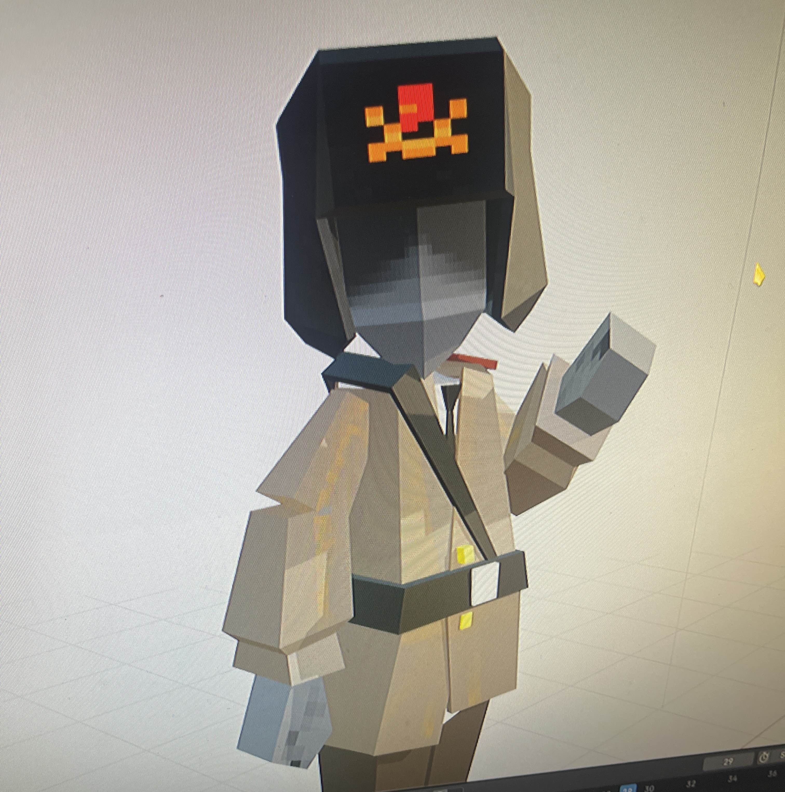
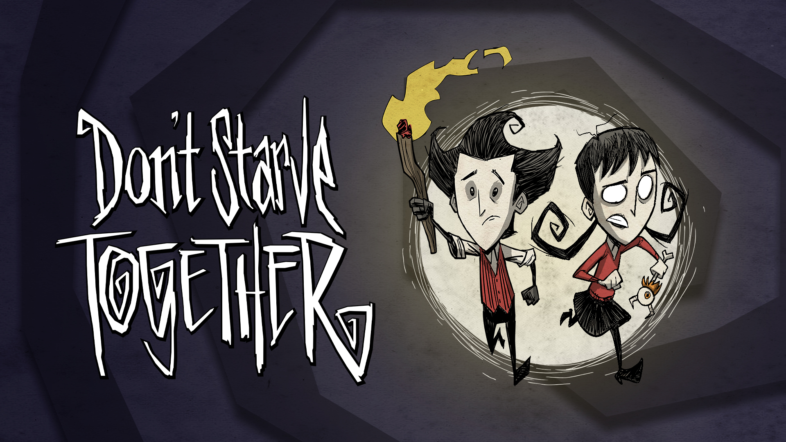
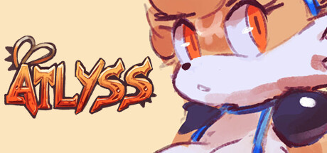
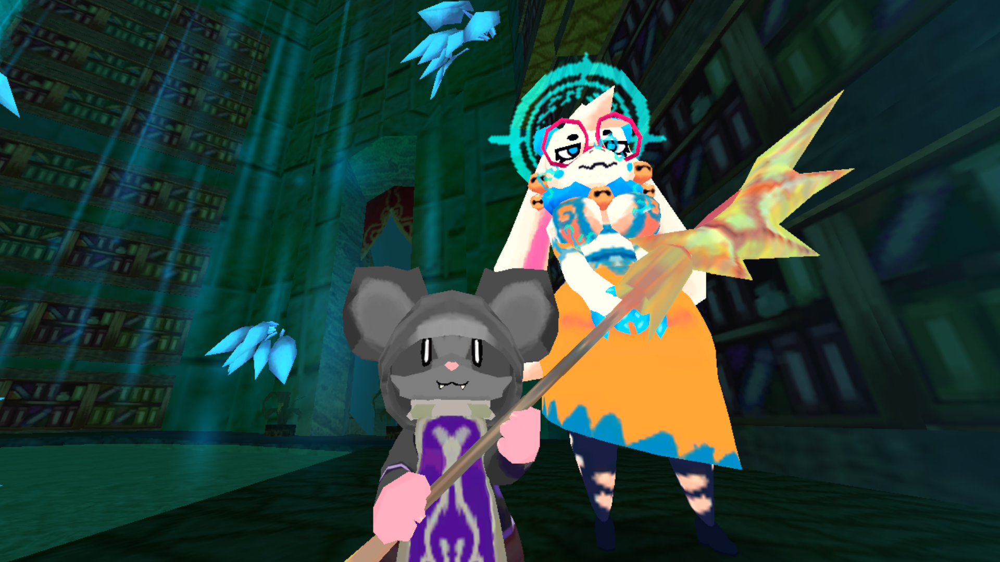
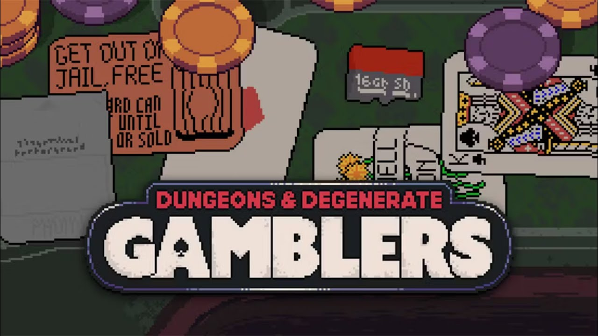
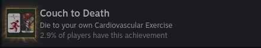

This is going to be less traditional compared to my regular blogs that usually have some value, but this is just games.
So the phrase "money can't buy happiness" is going to end today. Many scholars and poets have struggled or tried to explain if this statement is true, in tales like King Midas, the Greek story of the golden touch, where everything King Midas touches turns into gold — at first it's great since he's more rich, but like many Greek tragedies he soon sees the curse he's been given when his daughter came to him, upset about the roses that had lost their fragrance and become hard, and when he reached out to comfort her, he found that when he touched his daughter, she turned to gold. Just a long winded way of saying, was he wrong for caring about his daughter while being surrounded by riches and gold?
— We are going to ignore the moral part of the story. Here's the version I know though (Muppet one) :
(the next one is for those who only Midas from Fortnite)
So I got 3 games on sale: Dungeons and Degenerates and Gambling (D&DG), Don't Starve Together, and Atlyss. All have great reviews, but the main driving force is that I've never played a game similar to them — it's not a hero shooter or a "COD," nor a Tower Defence game. I want to branch out to different and hopefully good experiences. It also helped that they were dirt cheap.
D&DG — Dungeons and Degenerates was because I saw it in a Northernlion video years ago when it was in beta or something, and I liked the idea, so that was an immediate yes on my wishlist.
The second was Don't Starve Together, which I knew of, but never played. I've seen lore videos and love the visuals and style. It has the top down isometric view, "old Fallout view", also like a point and click style, amazing. I was curious and saw it was multiplayer too, so maybe running a server and playing with friends would be fun.
Finally was Atlyss, which was a new title for me — completely blind. I was only introduced to it by the art style. Yes, big boobs and ass are cool, BUT IT LOOKS LIKE A PS2/N64 GAME TOO AND I LOVE THAT STYLE. When I tried to make a game in Godot, that was the style I was going for and could replicate in Blender. But this was found solely by me — no YouTube video, no Instagram reel, no "underrated hidden gems" Reddit threads. It just won me over compared to the original contender, Webfishing, since it was like a Monster Hunter style, "DnD" multiplayer "class system" game.

my attempt at this style - holy edgelord…
I'm not going to go too far into a full walkthrough, but I just want to write highlights and praise.
Spent technically 22 dollars since tax, but technically 20 — fuck you, it's my blog.
I would usually add footage of my gameplay but I'm so bad I don't want to make the games look bad because I suck at them.

Which, to be honest, is a fun story, but I can't play it for long since I'm lost most of the time and I have no friends. I hear it's a graveyard for some of the original characters — like they nerfed the life out of them — but it's a good improvement apparently compared to the first game, so improvement was made. Nothing wrong with the game per se, just if I wanted to look at wikis I would play Terraria. But I will set up a server so I can get some people to try it out as well, and I will see if my opinion changes. Again, beautiful style and great lore, very small game file too — good if you wanna grind and learn over time.
so much for starving TOGETHER
"The king" isn't so pleased… yet.

I found this game the most fun. Making a character and grinding and killing and the feel is amazing. I love the double jump and movement. I love the aspects it takes from Monster Hunter and improves on (drop rates) and the stats. I love the small art details — how they're shown — and IT CAN BE PLAYED WITH FRIENDS, I HAVE PEOPLE THAT PLAY IT. They might be furries BUT LIKE, STILL IT'S A FUN GAME. Now it's a tad hard in the beginning, not because it's hard like "I can't beat this boss, Elden Ring mission" hard, more like I can't navigate where to go and some indicators are vague — no baby "yellow paint," as controversial as it is. Some parts are needed I feel, but I'm just stupid so don't take my full word for it. I love the little cute characters. My first time playing I ran a melee build with a giant hammer smashed into everything as a speedy imp — VERY FUN. I love how you can make characters and different classes — very cool, will recommend and defend not being a gooner.

Further reading: Atlyss is a considerately horny RPG… (inkl.com)

The most easy game to pick up and play. It's Blackjack but Balatro, if that makes sense — I can be bored in class, sit back, and not think too much, which compared to Atlyss where I need to lock in and do quests, is a welcome change of pace. I just click hit or stand and I've made it far with weird plays and runs, whether it's the school teacher stacking library cards or the wizard slowly building up to a perfect 21. The CPU pulling Yu-Gi-Oh trap card moves makes you jump out of your seat yelling WHAT, and then you copy them or land a perfect 21 yourself just for it to get blocked by their 21 — that builds the "spirit" that keeps you coming back. It's a roguelike so there's always a reason to return, and the suit mechanics alone — clubs hitting harder, hearts doing healing — make every run feel different. The achievements are unique and fun to do, and I even got this dumb one that really shows you the kind of chaos the game lets you pull off.

10/10, love it for dumb simple gameplay.I really had a good time playing these games.
So was King Midas a bitch about the worth of valuables such as my 20 dollars? I don't know. I watched the Muppets one like 9 years ago in music class in middle school. Did this cure my entire happiness? No. Was it worth 20 bucks? Yeah, I would say yeah. I got a good amount of hours — sure it's not 20+ yet, but still, first buying it and putting more hours into it than other games in my library, it's a good thing, especially when they make me come back to it constantly.
Though this isn't as interesting as my other blogs I fear, I hope these games get the recognition they deserve.